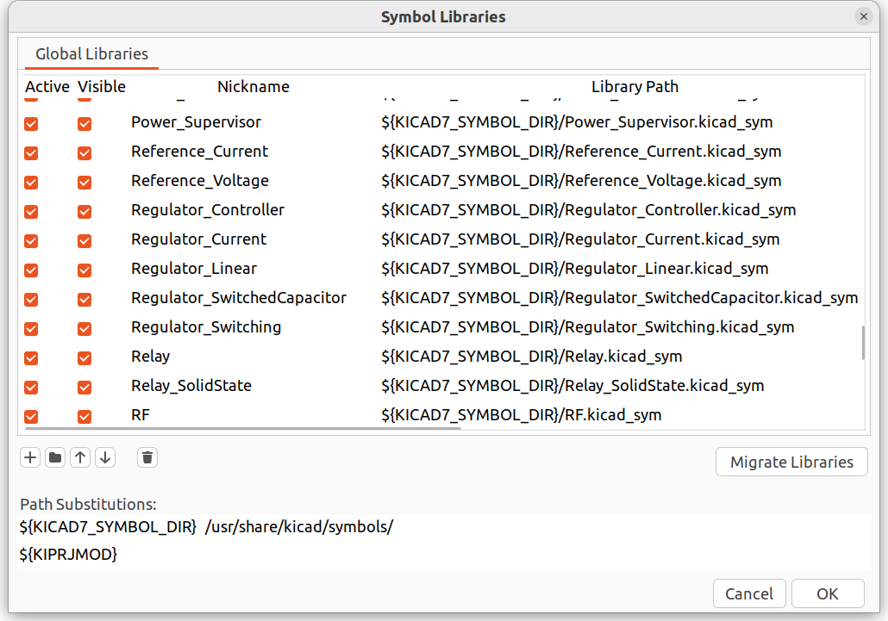
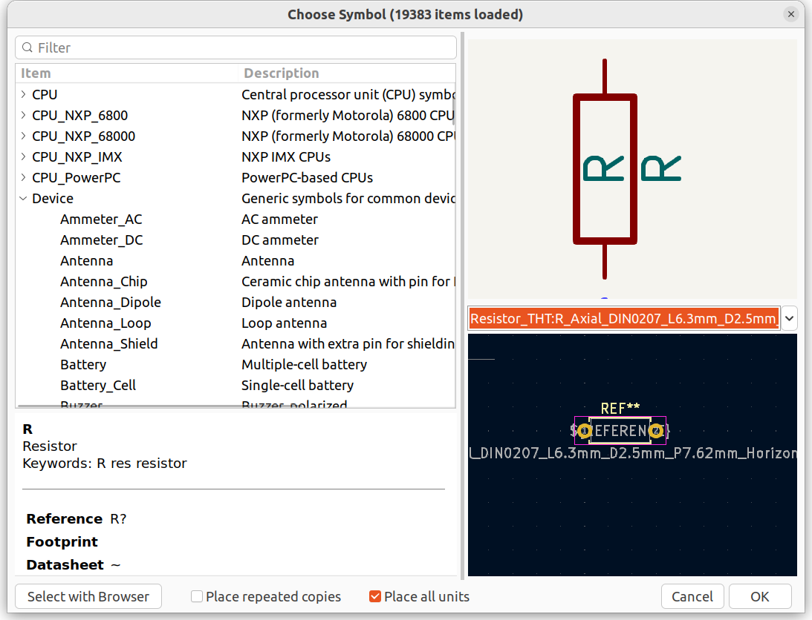
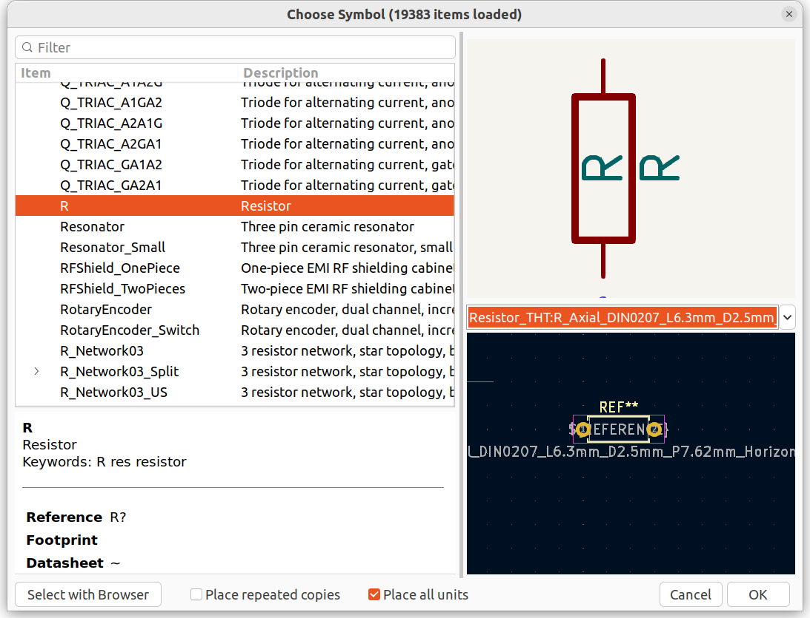
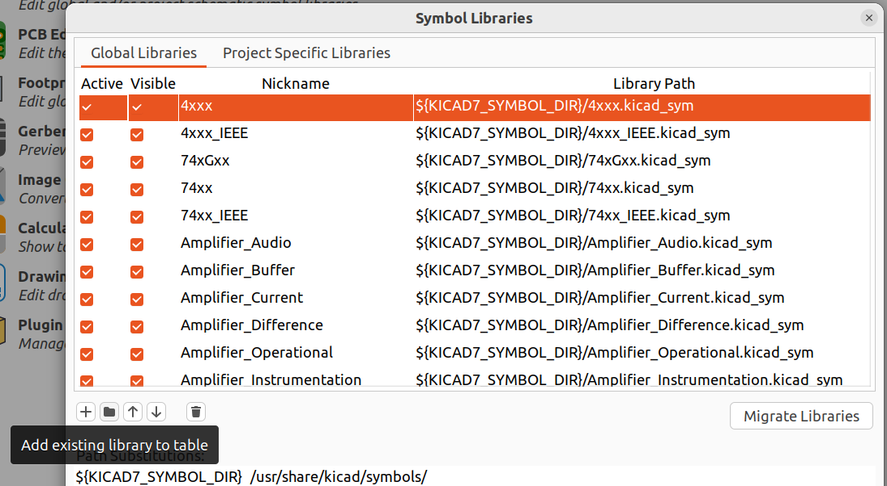

|
Usage |
|
|
Usage |

However when adding a symbol, it can be found under the item named "Device"

To import footprints:

https://support.snapeda.com/en/articles/5995733-how-to-import-into-kicad-v6-and-laterNote: if you add a new footprint file to the folder, you will have to remove and re-add the library.